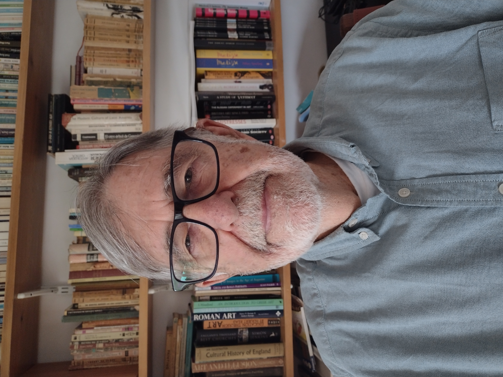

|  | Dr David A. Lavis Emeritus Senior Lecturer Department of Mathematics E-mail: david.lavis@kcl.ac.uk |
I was awarded a BSc from Queen Mary College, University of London, in 1961 and a PhD from the University of Manchester in 1965.
In 1977 I was elected a Fellow of the Institute of Physics and of the Institute of Mathematics and Its Applications.
I was appointed a lecturer in Mathematics at UMIST in 1964 and I moved to Chelsea College London in 1967, where I was appointed a Senior Lecturer in 1983.
Following the merger with King's I remained a Senior Lecturer until my retirement in 2004 when I was appointed a Visiting Senior Research Fellow.
In 2014 I became a Research Associate at the Centre for the Philosophy of Natural and Social Science, London School of Economics,
and in 2016 I was made an Emeritus Senior Lecturer at King's.
I have held leave Appointments at Makerere University, Kampala, Uganda (1969-71), Institut Laue-Langevin, Grenoble, France (1978-79),
University of Waterloo, Canada (1985) and University of Manitoba, Canada (1997).
Since my formal retirement my main area
of interest has moved towards the foundations of statistical
mechanics and thermodynamics. In particular I am interested in exploring the nature
of irreversibility and equilibrium.
In a number of papers on statistical mechanics I have argued
that, in order to reconcile the Boltzmann and Gibbs approaches to
statistical mechanics, it is necessary to abandon the binary
property of being or not being in equilibrium in favour of a
continuous property which I call 'commonness'. Related to this
I contend that rather than a preoccupation with 'local' increase in entropy
a more fruitful approach is to consider the global picture where
thermodynamic-like behaviour is associated with entropy mostly
fluctuating to values close to its maximum with infrequent
larger fluctuations to lower values.
In thermodynamics I have investigated the problem of equilibrium processes
and the contentious question of negative temperatures.
A well-known puzzle in thermodynamics and statistical mechanics is that critical phenomena,
understood as either discontinuities of densities (first-order transitions) or singularities
in response functions (second or higher order transitions) occur in theoretical models only
in the thermodynamic limit. Reimer Kuehn, Roman Frigg and I have explored this problem.
Using the renormalization group and finite-size scaling,
we give a definition of a large but finite system and argue that phase transitions are
represented correctly, as incipient singularities in such systems.
In the past series expansion methods
have been used with one expansion parameter and numerical
coefficients to obtain critical properties at one point in phase
space. The object of my research with Byron Southern of the
University of Manitoba is to provide the beginning of a general
methodology for using series to explore the whole of the phase
space. We are using the finite-lattice method to develop series
where the coefficients are polynomial functions of the Boltzmann
factors for a number of other couplings. We are currently
investigating a modified three-state Potts model on a triangular
lattice with a chiral term around each triangle. This chiral term
is of particular interest as it forms the basis for the
development of lattice models with directional bonding. These
have been used to simulate water-like behaviour.
A list of my papers with downloads is given here.
In 1999 I wrote, in collaboration with the late
George Bell, two books on the Statistical Mechanics of Lattice Systems
and in 2015 I completed a successor to these books. In 2025 I published, with Roman Frigg
of the Philosophy Department at the LSE, a book on the Fundamentals of Thermodynamics.
I discuss our motivation
for writing a book on thermodynamics here.
And details of all four books are given here.
I am no longer teaching any courses but here are copies of my notes for
Non-Linear Dynamics and
Control Theory
Research Interests